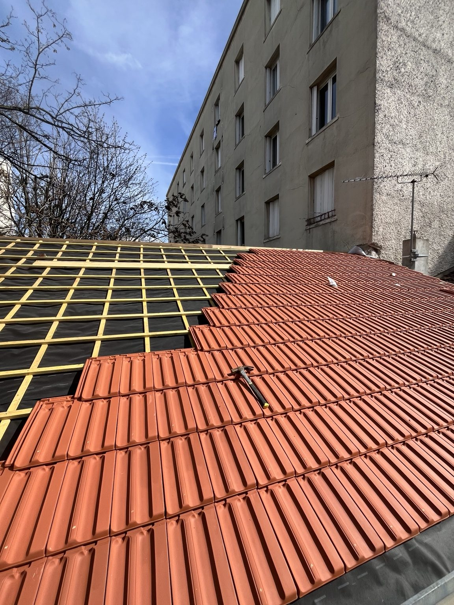
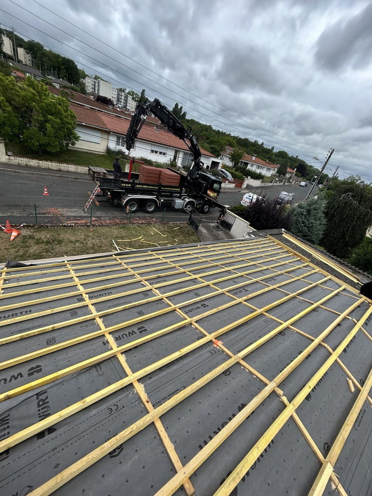
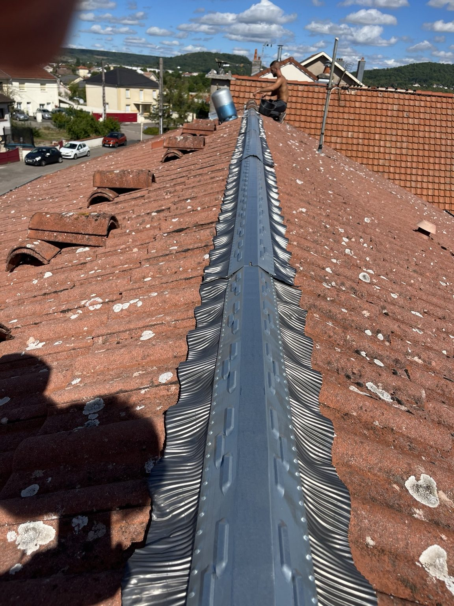
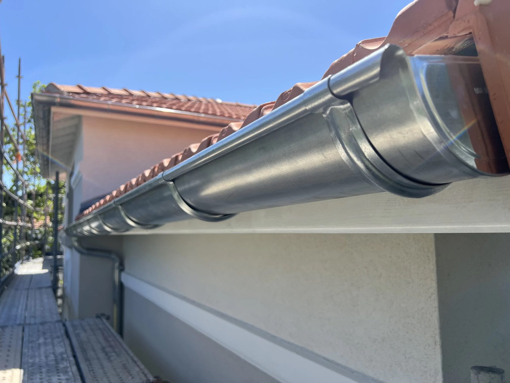
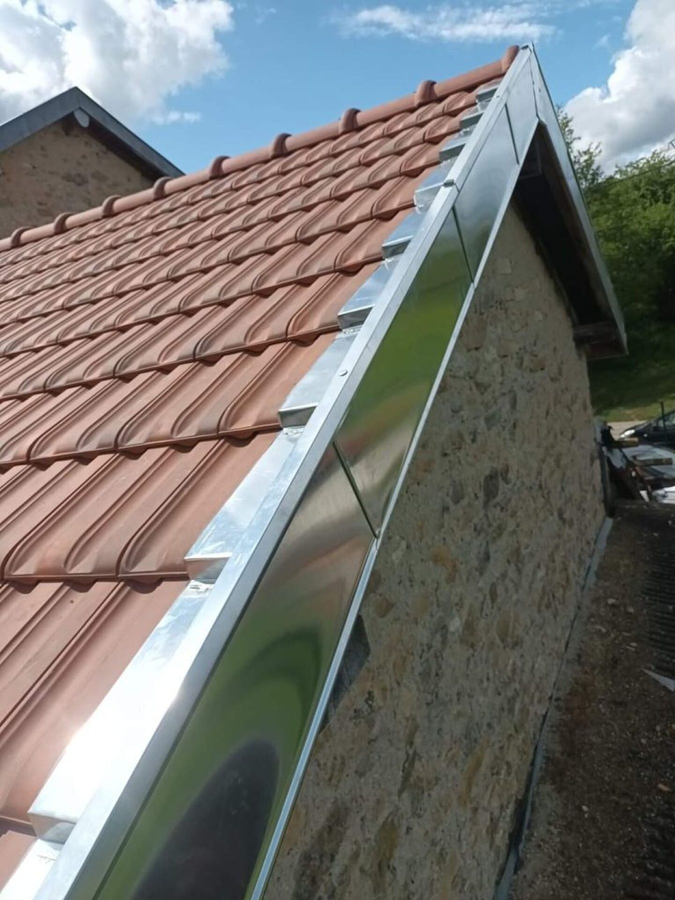
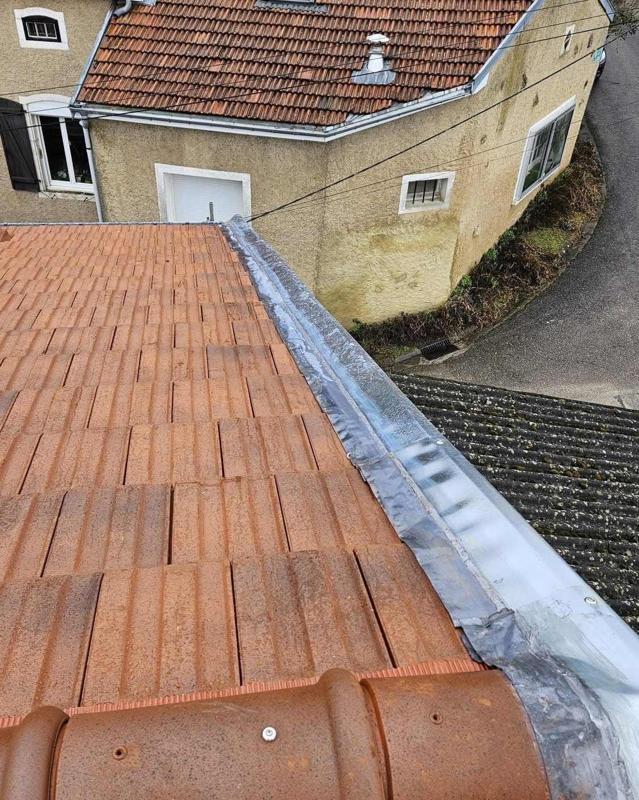

🏠 Rénovation de toiture
Réfection partielle ou complète, couverture, écran sous-toiture, lattage, faîtage et finitions.
Découvrir la rénovation →J2B Couverture intervient en priorité à Toul (54200) et dans le Toulois, ainsi qu'autour de Nancy et dans le Grand Est, pour la rénovation et la réparation de toiture, les fuites, la zinguerie, les gouttières, le faîtage, le démoussage, l'entretien et l'isolation.
Choisissez votre situation pour accéder directement à l'action la plus utile.
⚠️ Ne montez pas sur une toiture humide, endommagée ou instable. En cas de risque de chute d'un élément, évitez la zone située dessous.
De la réparation ponctuelle à la rénovation complète, J2B Couverture intervient sur les principaux éléments de la toiture.
Réfection partielle ou complète, couverture, écran sous-toiture, lattage, faîtage et finitions.
Découvrir la rénovation →Recherche de l'origine d'une infiltration et réparation ciblée lorsque l'état du toit le permet.
Réparation de fuite →Solins, noues, rives, raccords et ouvrages zinc participant à l'étanchéité.
Découvrir la zinguerie →Pose, remplacement et remise en état des évacuations d'eaux pluviales.
Voir les gouttières →Contrôle et remise en état des lignes hautes de la toiture exposées aux intempéries.
Faîtage et arêtiers →Nettoyage et traitement adaptés au matériau et à l'état de la couverture.
Démoussage toiture →Contrôle des points sensibles et entretien préventif avant aggravation des défauts.
Entretien toiture →Travaux d'isolation associés à la toiture et aux combles selon le projet.
Isolation toiture →Inspection et traitement du bois lorsque l'état de la charpente le nécessite.
Traitement charpente →Toul est le secteur local principal de J2B Couverture. Nous intervenons pour la rénovation de toiture, la réparation de fuite, la zinguerie, les gouttières, le faîtage et les arêtiers, le démoussage, l'entretien, l'isolation et le traitement de charpente.
Une infiltration ne signifie pas systématiquement qu'il faut refaire toute la couverture. Lorsque le défaut est localisé et que le reste du toit est sain, une réparation ciblée peut suffire. Si les problèmes deviennent multiples ou récurrents, une rénovation plus large peut être étudiée. Notre page dédiée à Toul présente en détail les solutions et les travaux proposés.
Des éléments concrets pour préparer votre projet de toiture.
Garantie décennale QBE Europe SA/NV.
Une proposition avant validation.
Toul et communes du Toulois.
Possibilité d'envoyer des images par WhatsApp.
Priorité aux infiltrations et dégâts actifs.
Des pages dédiées pour comprendre votre toiture et préparer votre demande.
Quelques retours présentés sur le site J2B Couverture.
Travail très soigné, intervention rapide. Je recommande.
Client J2B CouvertureDevis clair, équipe sérieuse et toiture impeccable.
Client J2B CouvertureRéparation de fuite efficace, bons conseils. Très professionnel.
Client J2B CouverturePhotos de travaux de couverture, zinguerie, faîtage, gouttières et finitions.






Indiquez votre besoin. Le téléphone est obligatoire ; les autres informations servent à préparer le contact.
J2B Couverture intervient à Toul, Écrouves, Dommartin-lès-Toul, Gondreville, Liverdun, Nancy et dans d'autres communes de Meurthe-et-Moselle selon le chantier.
Toul 54200 et Toulois
Préparez votre projet ou votre intervention avec nos pages dédiées.